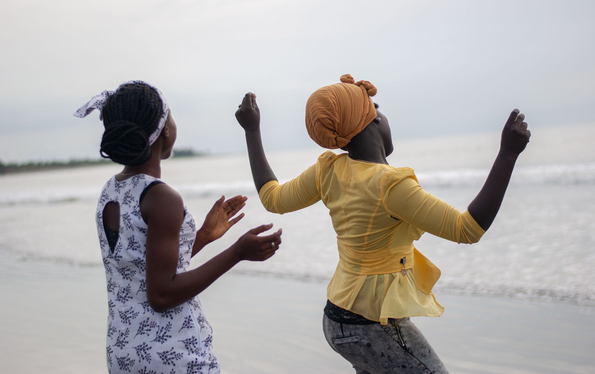
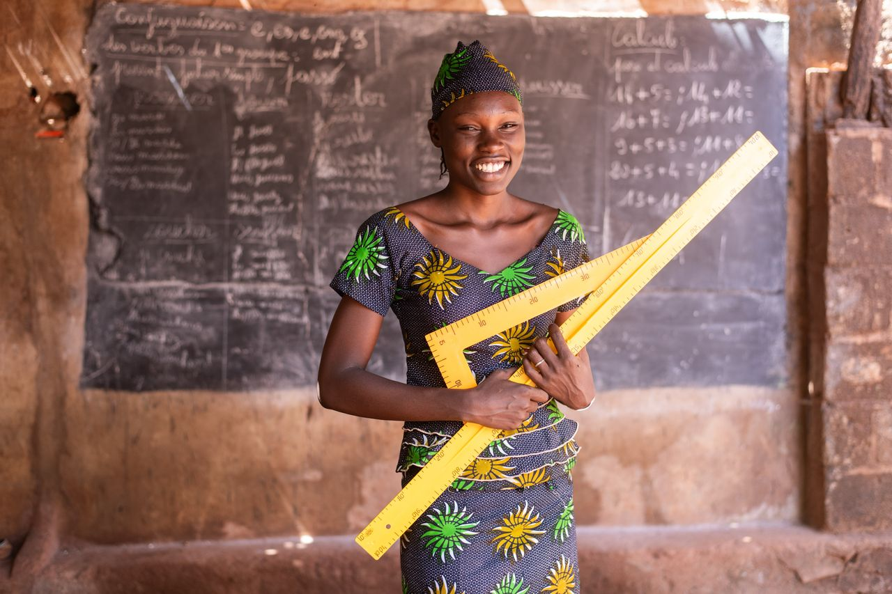
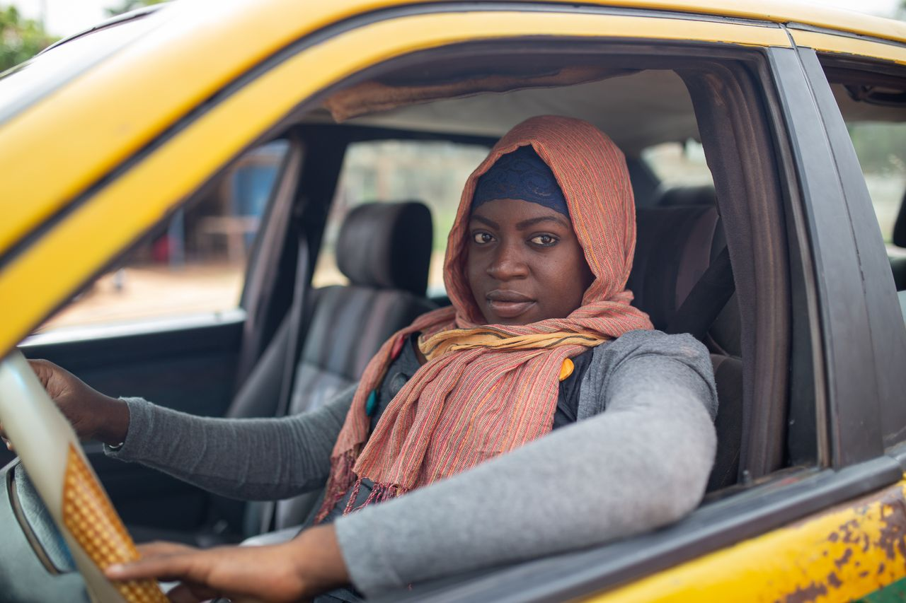
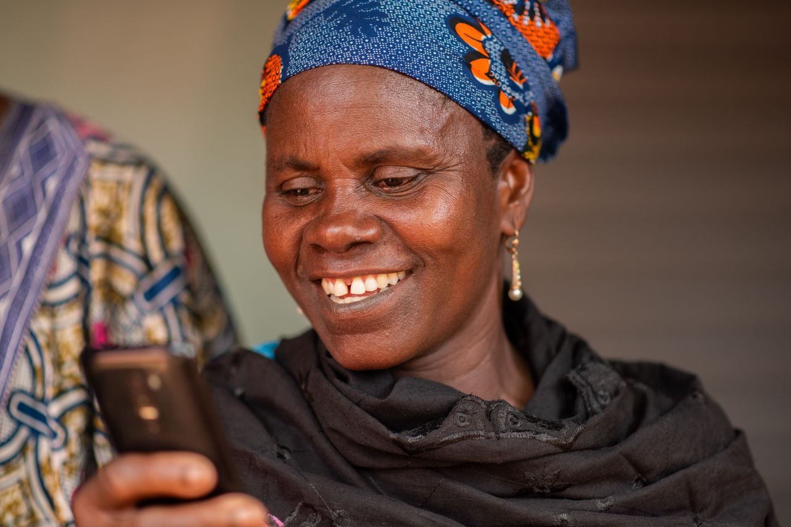
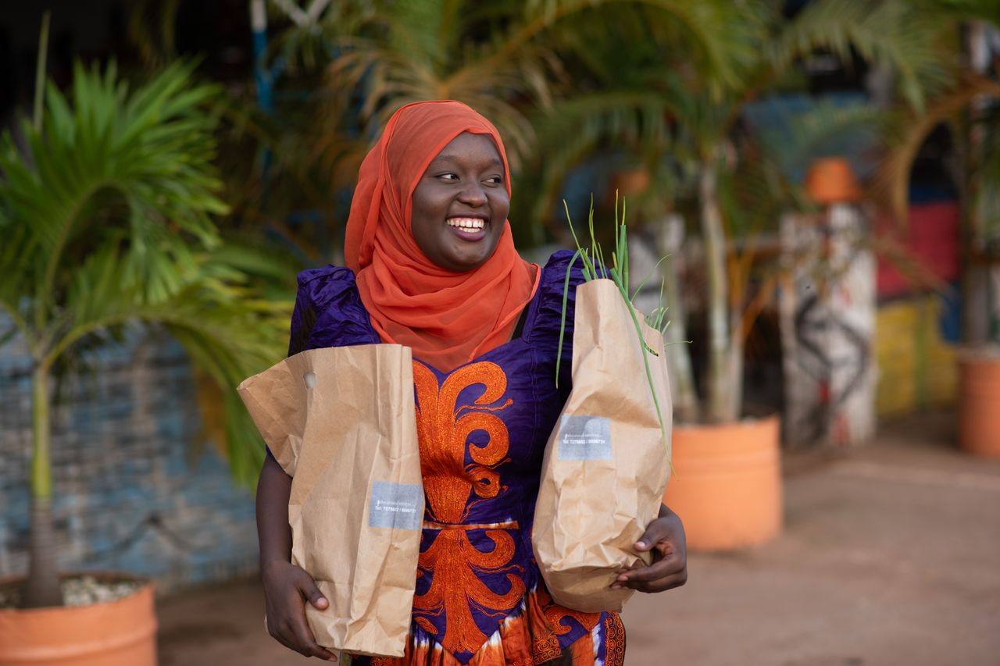
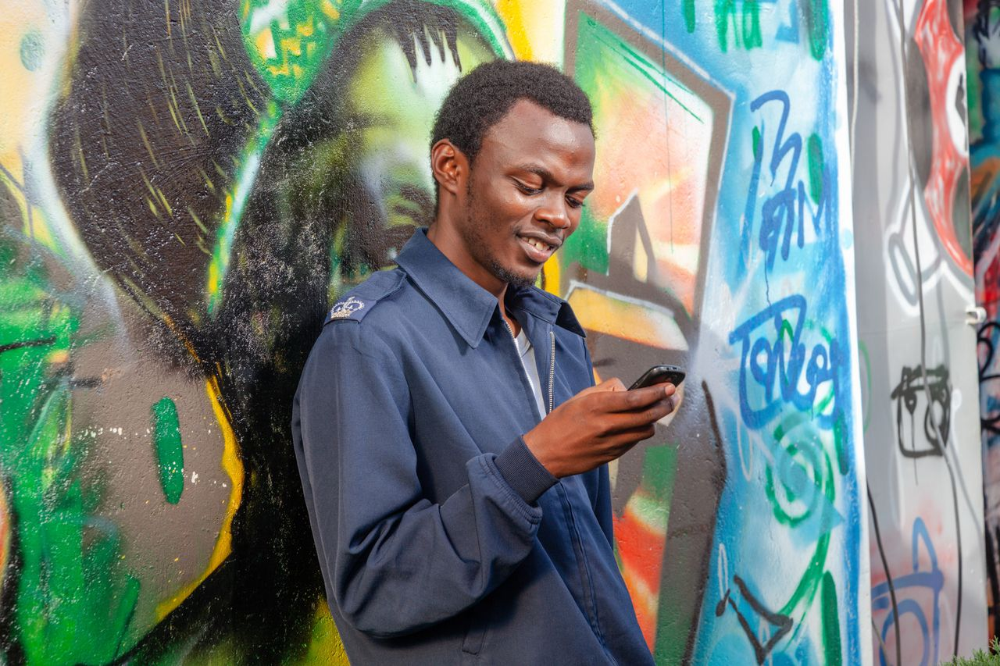
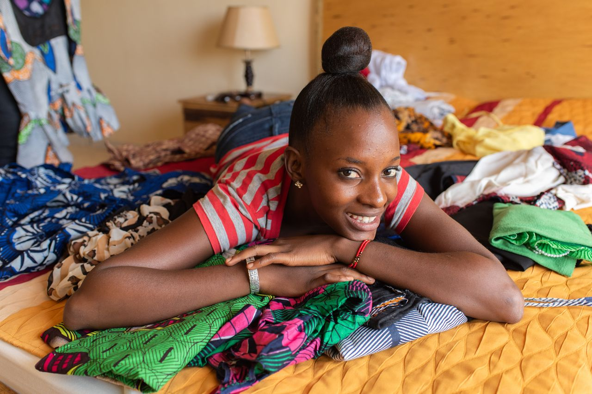
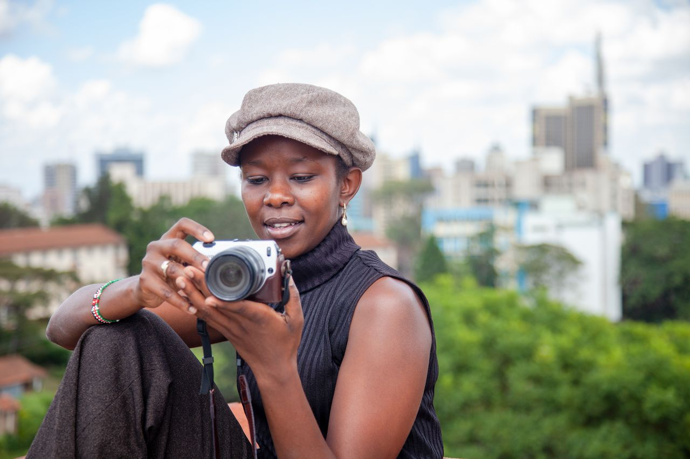
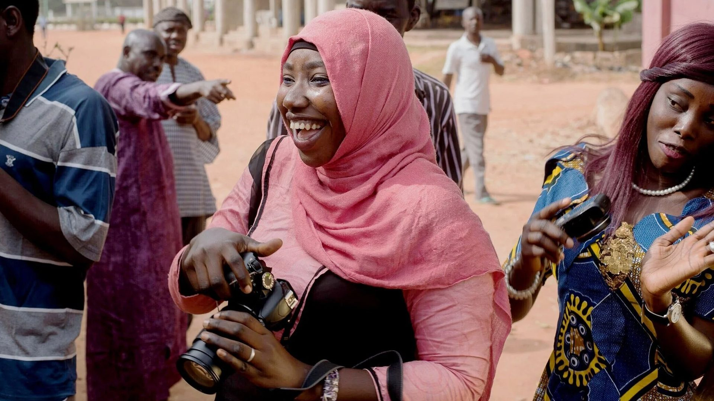

AR-1645 · Banjul, The Gambia Photo: Africa Reframed
We craft visual storytelling to bring contemporary Africa into view in Europe.
Europe and Africa need each other. Shared stories make people act together, across cultures and across sectors.
Relationships have to be seen to be trusted, so the pictures have to be true. That is the principle behind every image and every collaboration.
The archive
The archive holds the stories in pictures: photographs of modern African life, ready for partners to use in their own work.
Every photograph is made by a photographer on location, with the consent of the people in it. Our images are never AI-generated. The themes follow one story: people learn, put their skills to work, live connected lives in modern cities, and make culture. Ten photographs stand below, with the keywords they carry in the archive.







Teacher holding a ruler and set squareAR-1350 · Bamako, Mali Photo: Africa Reframed
Trainee chef smiling beside a woman at the counterAR-1628 · Banjul, The Gambia Photo: Africa Reframed
Taxi driver at the wheel of a yellow taxiAR-2046 · Banjul, The Gambia Photo: Africa Reframed
Young man leaning on a vice in a metal workshopAR-1044 · Bamako, Mali Photo: Africa Reframed
Woman with a laptop and phone in the driver’s seatAR-1137 · Nairobi, Kenya Photo: Africa Reframed
Older woman smiling at a smartphone, close-upAR-1381 · Bamako, Mali Photo: Africa Reframed
Young woman smiling with shopping bagsAR-1852 · Banjul, The Gambia Photo: Africa Reframed
Young man reading his mobile phone by a graffiti wallAR-1072 · Nairobi, Kenya Photo: Africa Reframed
Young woman lying among printed fabrics on a bedAR-1341 · Bamako, Mali Photo: Africa Reframed
Photographer checking her camera on a rooftopAR-1265 · Nairobi, Kenya Photo: Africa Reframed
Themes and keywords on these photographs
Theme
In the picture
Concept
Story
SDG
Partnerships
The archive is built on collaboration across sectors.
The archive is a shared resource: what one partner makes possible, every partner can use. That is how the stories become shared, and how the archive grows. There are three ways to take part.
Always free
Use it
NGOs, media, educational and public institutions use the images in their own reports, campaigns and classrooms.
By collection
Sponsor it
A company or foundation makes a new collection possible, is named on it, and uses the whole archive in its own channels.
On commission
Craft it
Photographers and other creators make the collections on location. Every image is credited, and the work is paid.

At one of our photography workshops Photo: Africa Reframed
A document, not an archive photograph: no AR ID. To add: the place and the year of the workshop (Thomas), and the original file (this one is 2,000 px wide and soft on sharp screens). Its people are not named.